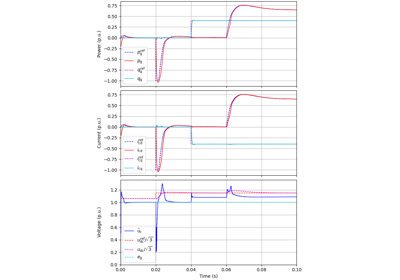
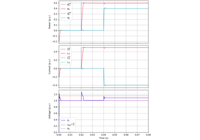
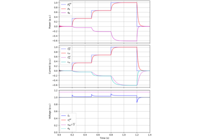
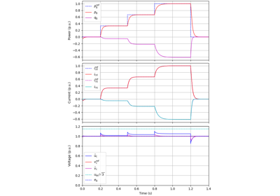

Grid Converters#
A collection of example scripts for grid converters.
Grid-Following Control#
These examples demonstrate grid-following (GFL) control. The current controller uses 2DOF synchronous-frame complex-vector PI controller, with an additional feedforward term from the low-pass-filtered grid voltage.


10-kVA, DC bus, GFL

10-kVA, GFL
Grid-Forming Control#
These examples demonstrate grid-forming control. The example 12.5-kVA, RFPSC-GFM uses a power-synchronization loop for synchronizing with the grid [1]. In 12.5-kVA, DO-GFM, disturbance-observer-based control is used [2].
References

12.5-kVA, RFPSC-GFM

12.5-kVA, DO-GFM